이사청소
[평택 이사청소] 화양 힐스테이트 84타입, 이사 먼지와 미흡했던 이전 청소까지 다시 잡은 후기
2026. 7. 30.
평택 화양지구에 자리한 힐스테이트 84타입 현장입니다.
입주를 앞두고 저희 BG솔루션 팀이 이사청소로 다녀온 곳입니다.
이삿짐이 유난히 많았던 현장이었습니다.
짐을 빼고 나니 바닥과 벽면, 창틀 곳곳에 이사 먼지가 두껍게 남아 있었습니다.
게다가 이전 집주인이 청소업체를 불러 정리를 했다고 들었지만, 현장에서 확인해 보니 미흡하게 마무리된 부분이 곳곳에서 발견되었습니다.
오늘 다룰 구역은 거실, 화장실, 주방, 베란다·창틀, 에어컨까지 총 다섯 곳입니다.
이사청소는 단순히 눈에 보이는 먼지만 닦아내는 작업이 아닙니다.
짐이 빠진 자리에서 쏟아지는 미세한 이사 먼지는 벽면 상단부터 바닥 몰딩, 창틀 레일 깊은 곳까지 파고듭니다.
특히 앞선 청소가 한 번 지나간 현장은 겉만 정리된 채 세부 구역이 그대로 남아 있는 경우가 많습니다.
그래서 저희는 위에서 아래로, 안쪽에서 바깥쪽으로 이어지는 순서를 지켜 놓치는 구역 없이 다시 잡았습니다.
오늘은 그 현장을 공개합니다.
이번 현장에서 진행한 작업
- 거실 : 벽면·천장 몰딩 먼지 제거 및 바닥 진공 청소
- 화장실 : 변기·세면대·타일·유리 부스 물때 및 잔여 오염 재청소
- 주방 : 상·하부장, 상판, 인덕션 이사 먼지 및 마감 청소
- 베란다·창틀 : 창틀 레일 퇴적 먼지 및 방충망 오염 제거
- 에어컨 : 필터 분리 세척
이사청소는 새 보금자리에서 처음 숨 쉬는 공기를 결정하는 작업입니다.
이사 먼지는 미세하게 떠다니다 가구 뒤와 창틀 안쪽에 쌓여 눈에 잘 띄지 않습니다.
앞선 청소가 한 번 지나갔더라도 세부 구역이 남으면 결국 입주 후 계속 신경이 쓰이게 됩니다.
그래서 저희 BG솔루션 팀은 이미 청소된 현장이라도 처음부터 다시 확인하며 작업합니다.
거실 — 짐이 빠진 자리, 벽면 상단부터 바닥까지 다시 훑은 이유
짐을 모두 뺀 거실은 겉으로는 깔끔해 보였습니다.
하지만 벽면 상단과 천장 몰딩 라인, 그리고 바닥 틈새에는 이사 먼지가 얇게 내려앉아 있었습니다.
왜 이렇게 됐을까요?
이삿짐이 많은 현장일수록 짐을 옮기는 과정에서 미세한 먼지가 대량으로 발생합니다.
이 먼지는 공기 중을 떠다니다 벽면 상단과 몰딩처럼 손이 잘 닿지 않는 높은 곳에 먼저 내려앉습니다.
그 뒤 바닥과 구석으로 가라앉기 때문에, 눈높이만 닦아서는 절대 마무리가 되지 않습니다.
이런 이사 먼지는 걸레로 대충 훔치면 오히려 벽면에 자국을 남기고 다시 떠오릅니다.
그래서 저희 BG솔루션 팀은 긴 봉 형태의 진공 흡입 도구로 벽면 상단과 천장 몰딩부터 먼지를 빨아들였습니다.
위쪽을 먼저 정리한 뒤 벽면을 따라 아래로 내려오며 바닥까지 순서대로 진공 작업을 진행했습니다.
먼지를 쓸어 내리는 것이 아니라 흡입해 담아내는 방식이라 재비산을 막을 수 있었습니다.
작업 과정

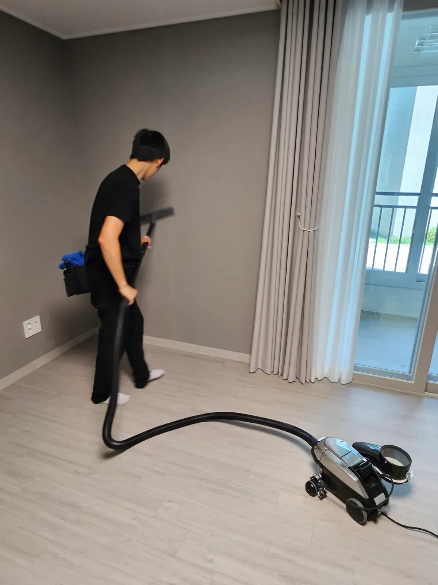
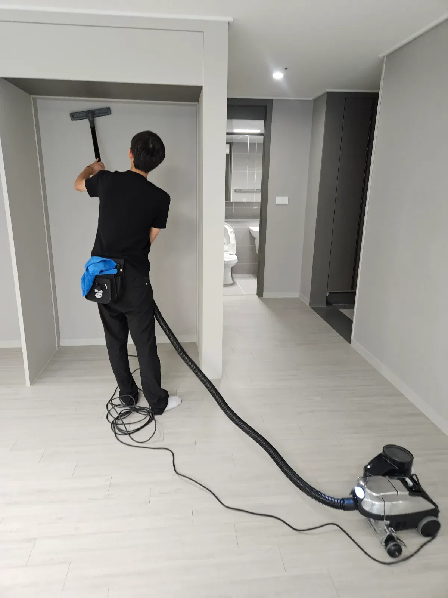
작업을 마친 거실은 벽면을 손으로 훑어도 먼지 한 톨 묻어나지 않는 상태가 되었습니다.
바닥은 맨발로 걸어도 서걱임이 느껴지지 않을 만큼 매끈하게 정리되었습니다.
화장실 — 이미 청소됐다던 공간, 다시 들여다본 세부 구역
변기와 세면대는 겉보기에 정돈되어 있었습니다.
다만 타일 바닥의 줄눈과 바닥 배수구 주변, 유리 부스 하단에는 미흡하게 남은 잔여 오염이 눈에 들어왔습니다.
before
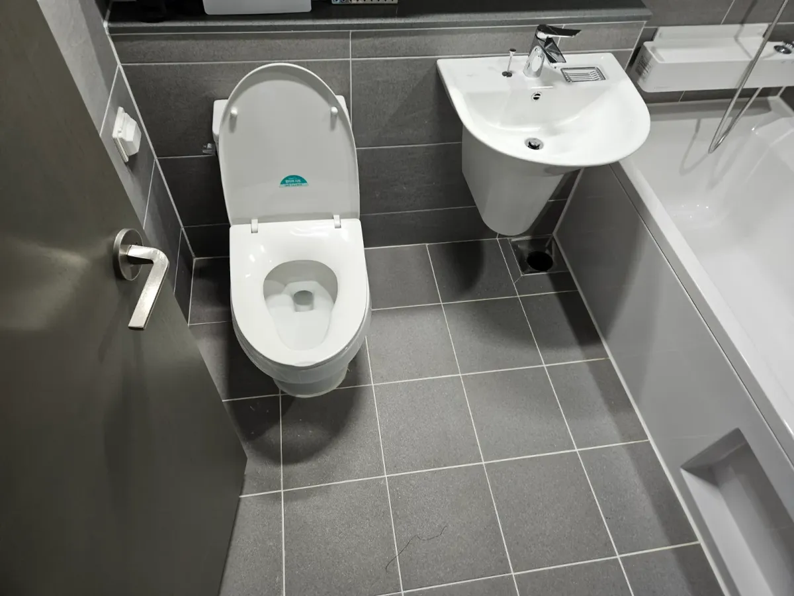
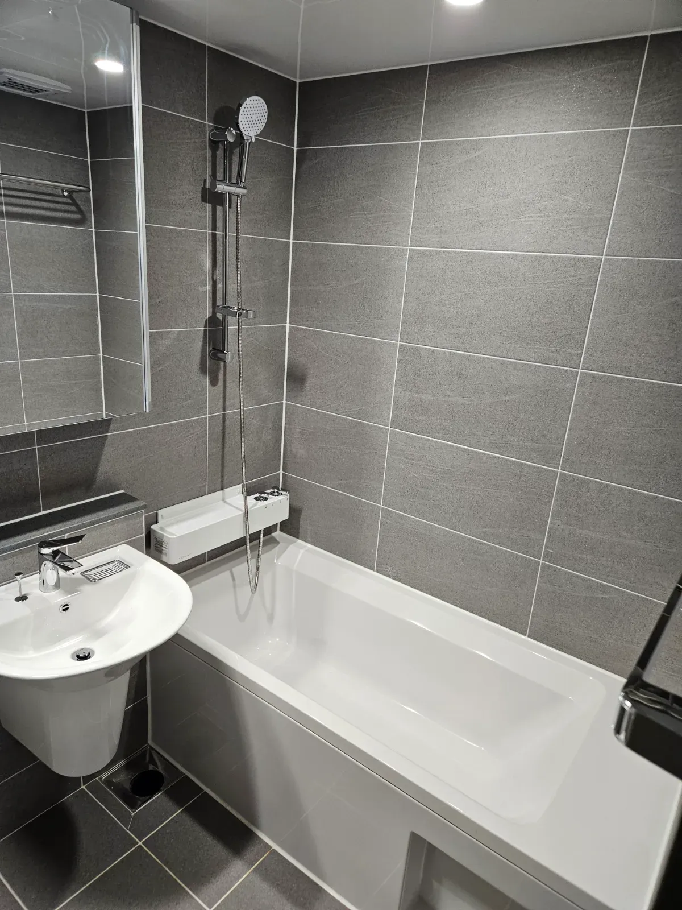
왜 이렇게 됐을까요?
이전에 한 번 청소가 지나간 현장이라도, 물기가 마르며 남는 물때와 줄눈 사이의 오염은 겉만 닦아서는 지워지지 않습니다.
특히 세면대 하부, 배수구 테두리, 유리 부스 실리콘 라인처럼 손이 잘 닿지 않는 세부 구역은 마무리에서 빠지기 쉽습니다.
그래서 정리된 것처럼 보여도 자세히 보면 얼룩이 그대로 남아 있는 경우가 많습니다.
화장실은 위생 공간이라 물로 헹구는 것만으로는 물때와 잔여 오염이 완전히 떨어지지 않습니다.
저희 BG솔루션 팀은 변기와 세면대 도기를 전용 세제로 다시 문질러 잔여 오염을 제거했습니다.
타일 줄눈과 배수구 주변은 솔로 세밀하게 긁어낸 뒤 충분히 헹궈 마무리했습니다.
유리 부스는 물기가 마른 자국까지 닦아내 투명도를 살렸습니다.
after
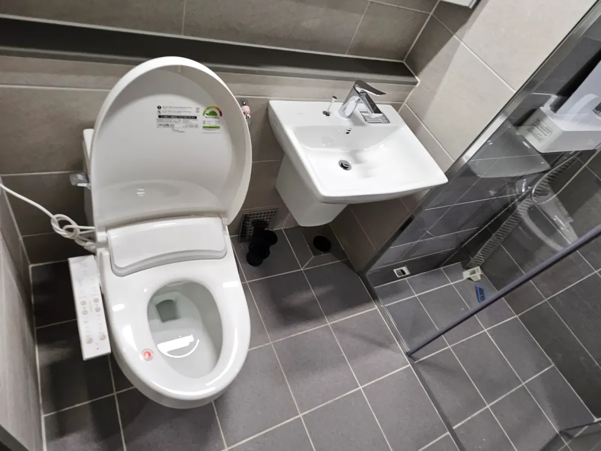
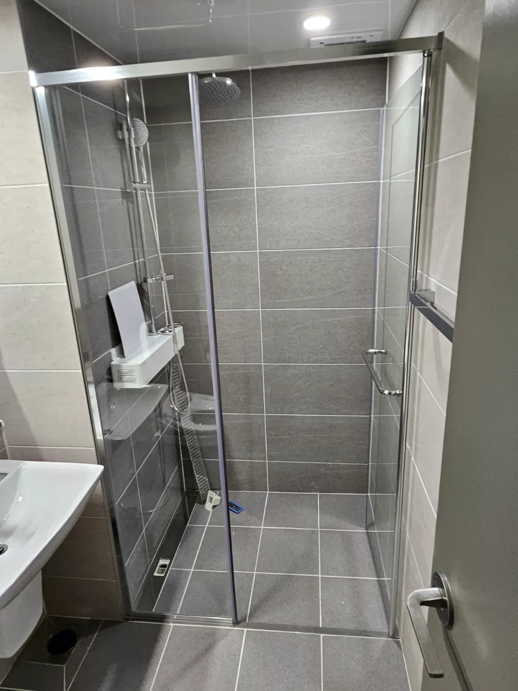
작업 후 세면대 도기는 손끝이 미끄러질 만큼 매끈해졌습니다.
타일 바닥과 유리 부스는 조명이 반사될 정도로 맑게 정돈되었습니다.
주방 — 박스와 짐이 쌓였던 상판, 인덕션까지 이사 먼지 걷어내기
주방에는 이사 물품 박스와 포장재가 상판 위에 그대로 놓여 있었습니다.
짐을 치우고 나니 상·하부장 표면과 상판, 인덕션 위로 이사 먼지가 뿌옇게 얹혀 있었습니다.
before
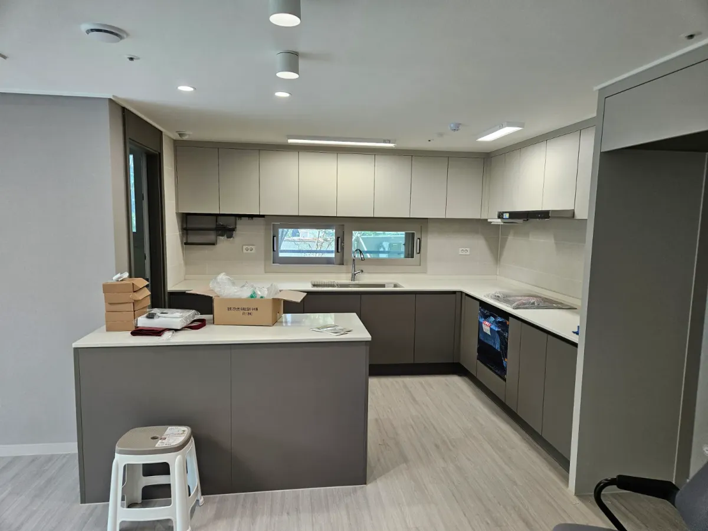
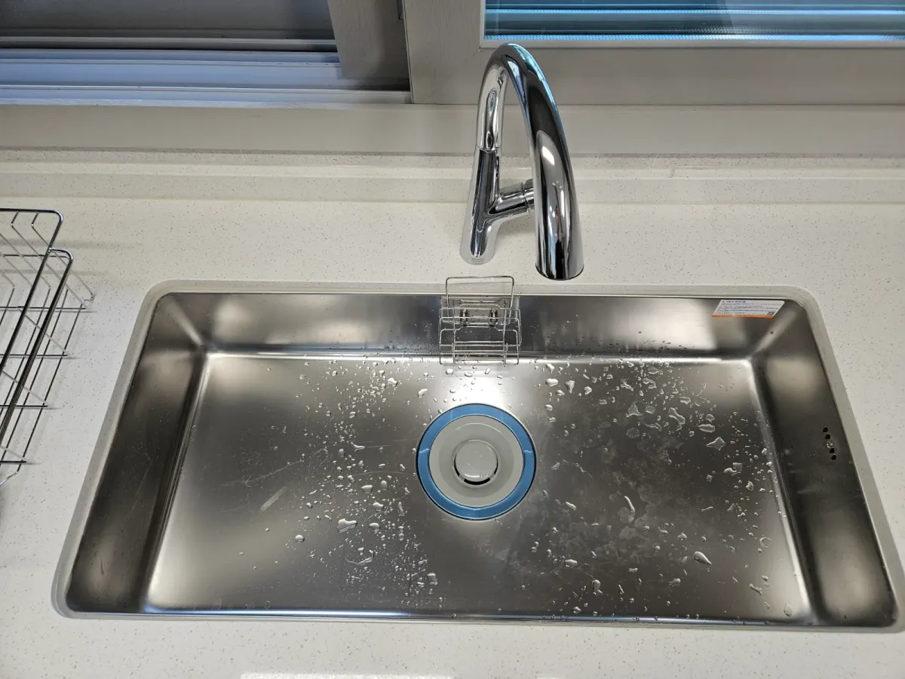
왜 이렇게 됐을까요?
주방은 이사 초기에 짐을 임시로 쌓아두는 공간으로 가장 많이 쓰입니다.
박스를 올리고 내리는 과정에서 종이 먼지와 이사 먼지가 상판과 수납장 문짝에 계속 내려앉습니다.
특히 인덕션 상판은 매끈한 유리 재질이라 미세한 먼지가 얇게 깔리면 마른 상태에서 더욱 도드라져 보입니다.
인덕션 유리 상판은 마른 천으로 그냥 닦으면 미세한 스크래치와 얼룩이 남습니다.
그래서 저희 BG솔루션 팀은 상·하부장 문짝을 먼저 닦아 먼지를 걷어낸 뒤 상판을 정리했습니다.
인덕션은 전용 세제를 분사해 이사 먼지를 부드럽게 녹인 뒤 결을 따라 닦아냈습니다.
마지막으로 마른 천으로 물기와 얼룩을 다시 정리해 마감했습니다.
after
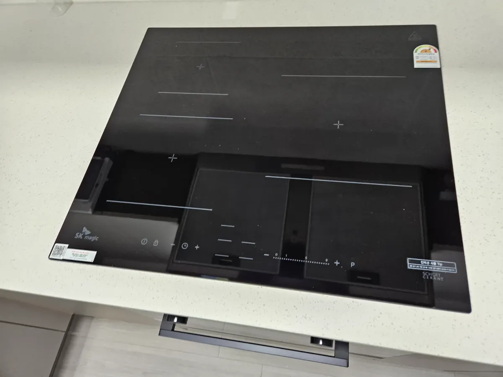
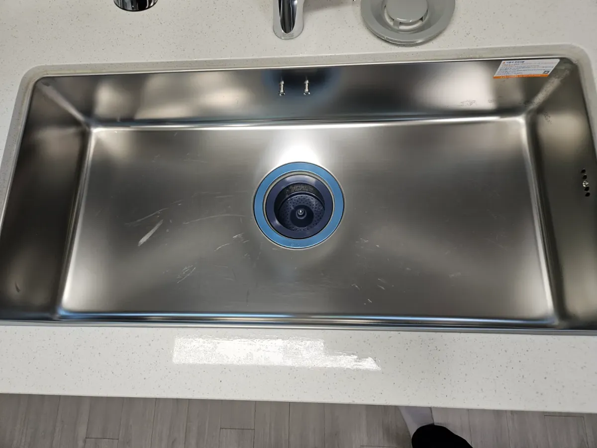
작업 후 인덕션 상판은 검은 유리면에 조명이 그대로 비칠 만큼 광택이 살아났습니다.
수납장 문짝은 손으로 쓸어도 먼지가 묻어나지 않는 상태로 마무리되었습니다.
베란다,창틀 — 레일에 쌓인 검은 퇴적 먼지, 방충망까지 걷어낸 자리
창틀 레일에는 검은 퇴적 먼지가 층층이 눌러앉아 있었습니다.
방충망 역시 뿌옇게 흐려져 바깥 풍경이 탁하게 비칠 정도였습니다.
before
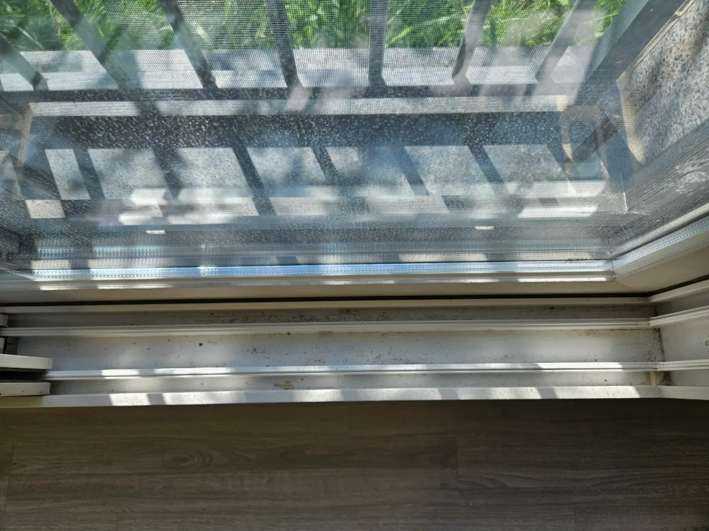
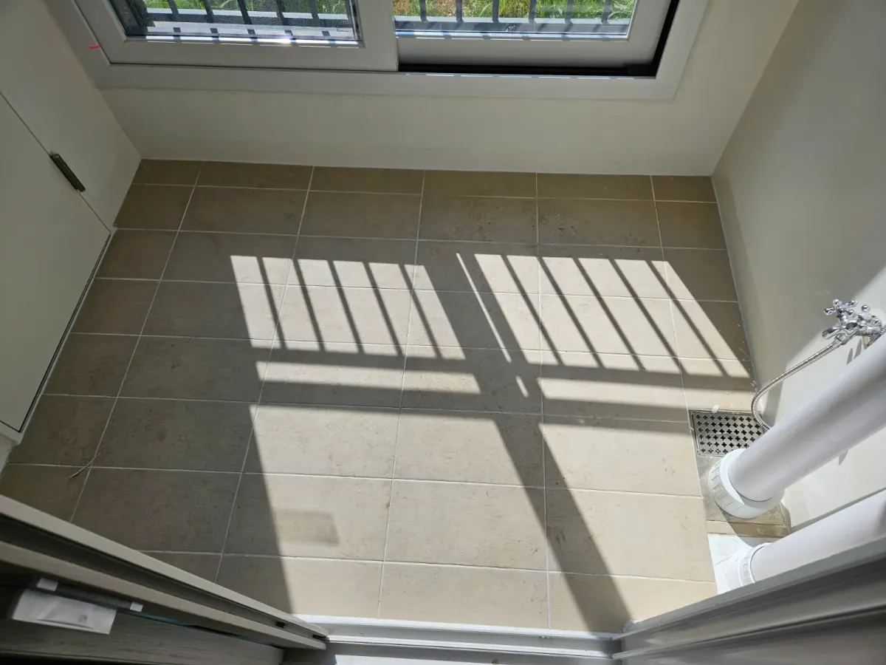
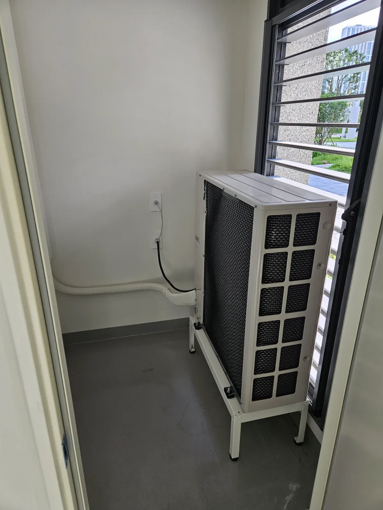
왜 이렇게 됐을까요?
창틀 레일은 외부에서 유입되는 먼지와 이사 과정의 먼지가 함께 가라앉는 대표적인 구역입니다.
좁고 깊은 홈 구조라 빗물이나 습기가 스며들면 먼지가 굳어 검게 퇴적됩니다.
방충망은 촘촘한 망 사이사이로 미세 먼지가 끼기 때문에 겉만 털어서는 흐림이 걷히지 않습니다.
창틀 레일은 좁은 홈 때문에 걸레만으로는 굳은 먼지가 빠지지 않습니다.
저희 BG솔루션 팀은 레일 안쪽 먼지를 먼저 긁어내고 물을 흘려 굳은 오염을 풀어낸 뒤 닦아냈습니다.
방충망은 망 사이에 낀 먼지를 물과 함께 세척해 시야를 가리던 흐림을 걷어냈습니다.
좁은 홈 사이사이의 시공은 시간이 걸리더라도 하나하나 짚어가며 진행했습니다.
after
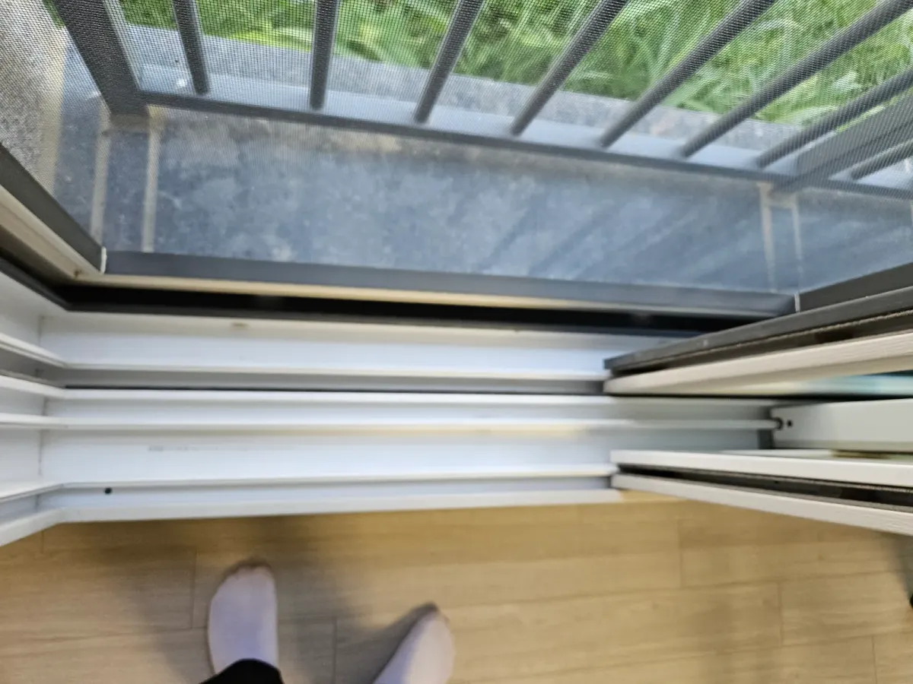
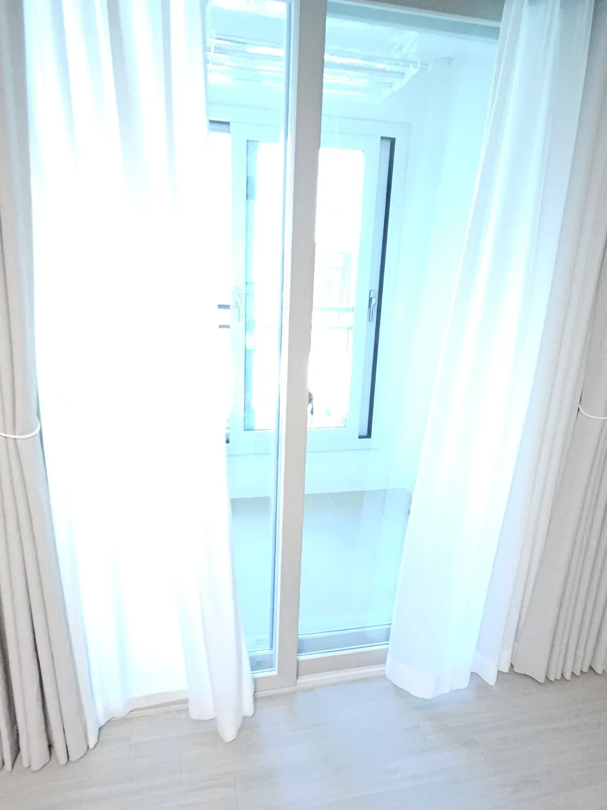
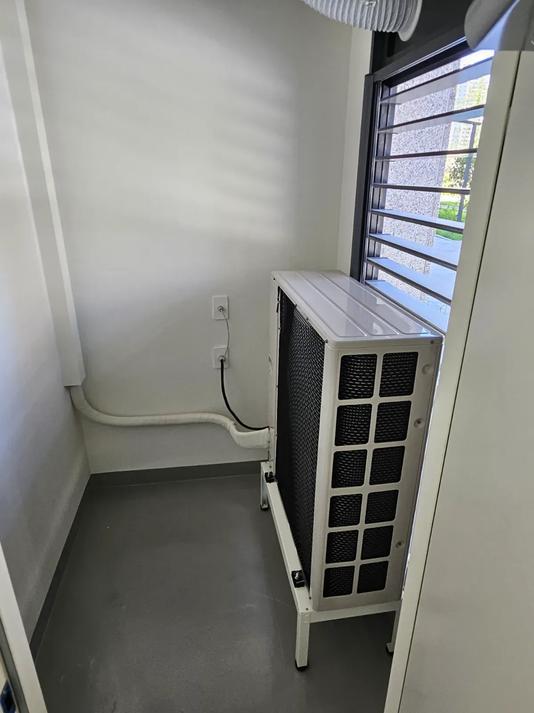
작업 후 창틀 레일은 흰 표면이 그대로 드러나 손을 넣어도 검은 먼지가 묻지 않았습니다.
방충망 너머로 바깥 풍경이 한결 또렷하게 들여다보였습니다.
에어컨 — 열 장 넘는 필터를 한 줄로, 이사 먼지 먹은 필터 세척
에어컨 필터를 분리해 보니 이사 먼지를 머금어 뿌옇게 흐려진 상태였습니다.
필터를 모두 떼어내 한 줄로 세워 보니 그 양이 열 장을 넘었습니다.
왜 이렇게 됐을까요?
에어컨 필터는 실내 공기를 빨아들이는 첫 관문이라 이사 과정에서 떠다니는 먼지를 그대로 걸러 담게 됩니다.
짐이 많아 먼지가 많이 발생한 현장일수록 필터에 쌓이는 오염도 그만큼 늘어납니다.
이 상태로 가동하면 걸러진 먼지가 다시 실내로 뿜어져 나올 수밖에 없습니다.
필터는 겉을 툭툭 털어내는 것만으로는 망 사이에 낀 미세 먼지가 빠지지 않습니다.
그래서 저희 BG솔루션 팀은 필터를 한 장씩 모두 분리해 물로 세척하는 방식으로 진행했습니다.
망 사이사이에 박힌 이사 먼지를 흘려보낸 뒤 충분히 건조시켜 다시 장착했습니다.
장수가 많았지만 한 장도 빠짐없이 같은 방식으로 세척했습니다.
작업 과정
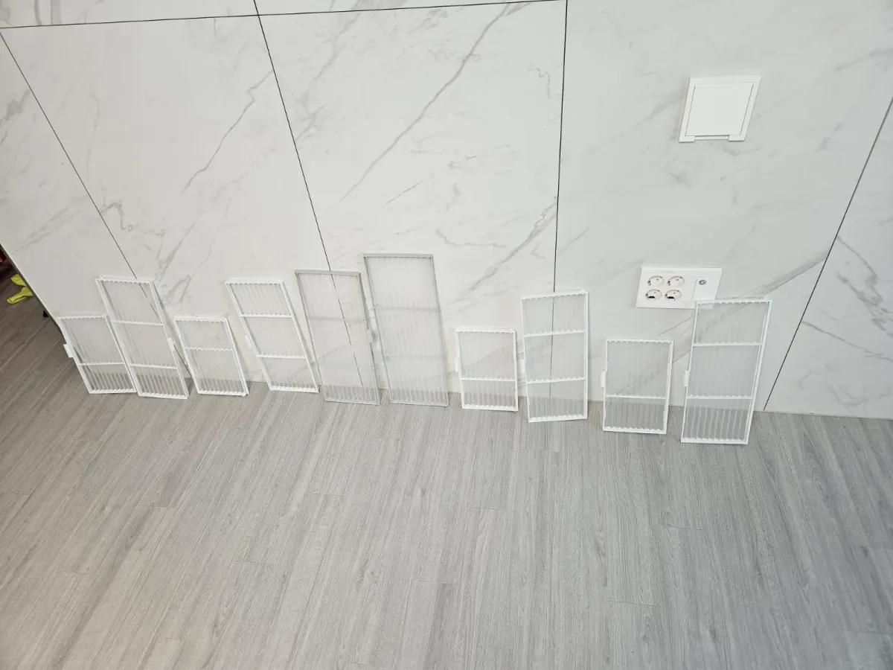
세척을 마친 필터는 망 사이로 빛이 그대로 통과할 만큼 맑아졌습니다.
손으로 만져도 먼지가 묻어나지 않는 깨끗한 상태로 마무리되었습니다.
마무리
거실 벽면과 바닥, 화장실의 세부 오염, 주방 상판과 인덕션, 창틀 레일과 방충망, 그리고 에어컨 필터까지 다섯 구역을 모두 다시 잡았습니다.
이미 한 번 청소가 지나간 현장이었지만, 저희 BG솔루션 팀은 처음부터 다시 확인하며 미흡했던 세부 구역을 놓치지 않고 마무리했습니다.
입주를 앞두고 이사 먼지와 이전 청소의 아쉬움이 걱정되신다면 BG솔루션으로 편하게 문의해 주시기 바랍니다.
보이는 곳이 아니라 남는 곳까지.
입주 첫날을 깨끗하게, BG솔루션.